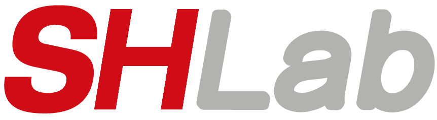
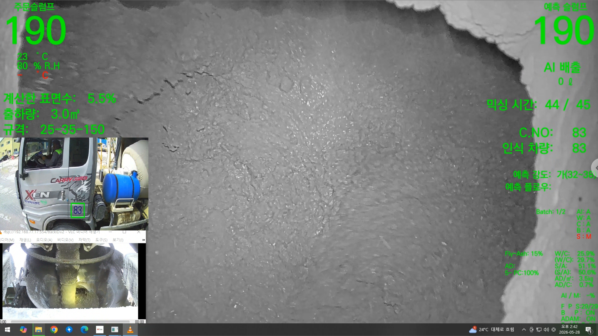
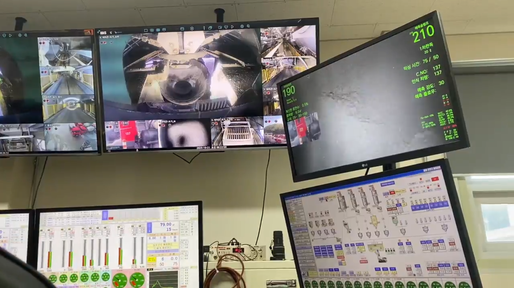

SH
SHLab Company & Interview Briefing
레미콘 품질 판단을
AI 기반 자동화로 전환하다
SHLab 기업 소개

AICon
AI · Quality · Initiative
SHLab Company & Interview Briefing
SHLab 기업 소개

WHY SHLAB
COMPANY OVERVIEW
PROJECT OVERVIEW
차량번호, 골재 종류, 적재량을 AI로 인식하고 웹 기반 관리 화면에서 입고·출고·사용량을 확인하는 솔루션입니다.
READY-MIXED CONCRETE PROBLEM
날씨와 계절에 따라 실제 물량이 달라집니다.
반죽 상태 판단이 사람의 경험에 기대기 쉽습니다.
압축강도는 시간이 지나야 확인되는 항목입니다.
반품, 재생산, 현장 클레임으로 이어질 수 있습니다.
생산, 운송, 검사 정보가 분산되면 추적이 어렵습니다.
AICON OVERVIEW
공개 제품 소개 기준: 레미콘/아스콘/골재 주문, 생산부터 출하까지 제조 관련 과정을 DT로 제공하는 솔루션
FIELD APPLICATION

믹서 내부와 차량 화면을 함께 보며 슬럼프와 출하 상태를 확인합니다.
주문 슬럼프와 예측 슬럼프를 나란히 표시해 품질 편차를 빠르게 파악합니다.
차량번호 인식과 배출 상태를 연결해 출하 과정의 오류를 줄이는 방향입니다.
ON-SITE OPERATION

여러 CCTV와 생산 설비 화면을 한 공간에서 확인하며 공정 상황을 파악합니다.
AI 예측 화면을 작업자가 직접 보며 품질 판단과 출하 과정을 보조받습니다.
AI 모델, 카메라, 배치플랜트 화면이 실제 운영 환경 안에서 함께 쓰입니다.
CORE FUNCTIONS
믹싱 영상으로 유동성과 반죽 상태를 분석
배합, 영상, 생산 데이터를 기반으로 품질 불확실성 축소
현장 품질에 영향을 주는 물성 요소 추적
골재 수분 변화에 따른 배합 편차 보정
생산 설비와 연동해 반복 조작 부담 완화
출하 차량 확인과 오투입 위험 감소
작업자 접근과 위험 상황을 감지하는 방향
생산 결과와 예측 정보를 추적 가능한 데이터로 축적
TECH ARCHITECTURE
믹서 영상, 센서, 배합, 생산 로그
프레임, 전류, 온도, 차량 정보 통합
영상 분석과 품질 예측
배합 보정 및 설비 연동 판단
품질 이력, ERP, 현장 리포트
REFERENCE SIGNAL
SHLAB STRENGTHS
레미콘 도메인을 이해하고, 현장 데이터를 모으며, 설비 제어와 품질 이력을 연결하는 방향성
CHALLENGES
설비, 배합, 운영 방식이 달라 표준화와 현장 적응을 함께 설계해야 합니다.
슬럼프와 강도 같은 품질값은 라벨의 일관성이 모델 성능을 좌우합니다.
예측값이 틀렸을 때 사람이 개입할 수 있는 안전한 절차가 필요합니다.
카메라, 네트워크, GPU, 저장 장치가 동시에 흔들릴 수 있습니다.
BP, 센서, ERP 등 기존 시스템과 안정적으로 연결해야 합니다.
현장 장비와 AI 모델을 지속적으로 관리할 운영 역량이 필요합니다.
FOR STUDENTS
영상 전처리, 객체 탐지, 회귀 예측, 데이터 라벨링
TCP/IP, Modbus, 산업용 PC, 카메라 연결
생산 이력, 권한, 대시보드, 알림 시스템
시계열 데이터, 회귀 분석, 품질 기준 이해
정확도뿐 아니라 장애 대응과 안전성을 함께 고려
INTERVIEW POINTS
| 직무 | 핵심 역량 | 예상 질문 |
|---|---|---|
| AI Vision | 영상 분석, 모델 학습, 전처리 | 조명 변화가 심한 현장 영상을 어떻게 처리할 것인가? |
| IoT / 설비 | 센서, 통신, 산업용 장비 연동 | 네트워크가 불안정할 때 데이터 수집을 어떻게 설계할 것인가? |
| Backend | API, DB, 생산 이력 관리 | 품질 예측 결과와 생산 이력을 어떤 구조로 저장할 것인가? |
| Data | 강도 예측, 이상치, 품질 기준 | 예측값과 실제 시험값이 계속 어긋나면 어떻게 개선할 것인가? |
PRACTICE QUESTIONS
SHLab이 해결하려는 산업 문제를 한 문장으로 설명해보세요.
레미콘 품질 예측에서 영상 데이터가 중요한 이유는 무엇인가요?
현장 AI 시스템이 일반 웹서비스보다 어려운 점은 무엇인가요?
슬럼프, 강도, 플로우, 잔수 중 가장 예측이 어려운 항목은 무엇이라고 생각하나요?
AI 모델이 틀렸을 때 시스템은 어떻게 대응해야 하나요?
공장마다 환경이 다를 때 모델을 어떻게 일반화할 수 있을까요?
CLOSING
감사합니다.